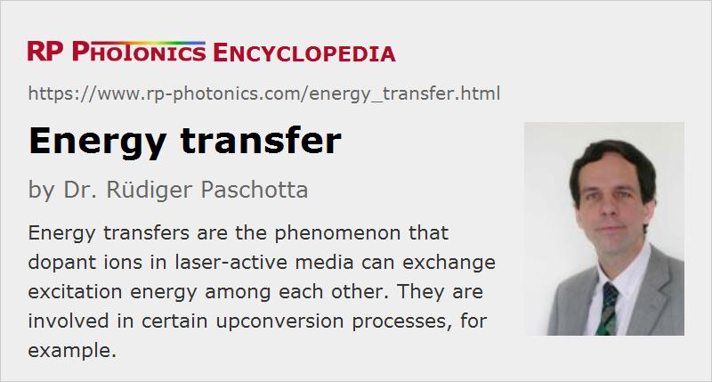

Energy Transfer
Definition: the phenomenon that dopant ions in laser-active media can exchange excitation energy among each other
German: Energietransport
Category: physical foundations
How to cite the article; suggest additional literature
Author: Dr. Rüdiger Paschotta
Particularly in highly doped solid-state gain media (laser crystals, glasses, and rare-earth-doped fibers), energy transfer between different dopant ions can occur. The dominant mechanism behind this is usually the dipole–dipole resonant interaction (Förster energy transfer) between closely located ions, rather than emission and reabsorption of fluorescence photons, although the latter mechanism can be significant over longer distances. As the strength of the dipole–dipole interaction rapidly vanishes with increasing distance between the ions (with the inverse sixth power of distance), its overall importance depends strongly on the doping concentration, the size of the crystal's unit cell and also the tendency of ions to form clusters.
If the energy loss of the “giving” ion (the donor) is larger than the energy gain of the “receiving” (acceptor) ion, the excess energy can be taken away by one or several phonons. One is then dealing with (multi-)phonon-assisted energy transfers.
There are other kinds of energy transfer processes, occurring e.g. between molecules in liquids (and possibly involving the exchange of electrons) or between colliding atoms or molecules in gases.
The strength of energy transfer processes can be quantified with energy transfer parameters in rate equation models. The rate of a particular energy transfer process is then normally described as the product of such a parameter and the excitation densities of the involved electronic levels.
Effects of Energy Transfers
The main effects of energy transfers in laser gain media are:
- Excitation energy is transported within the gain medium via energy transfers between laser ions of the same species (energy migration) (Figure 1). This can occur e.g. in highly ytterbium-doped crystals. Such processes do not directly modify the stored energy, but nevertheless can affect the laser efficiency in positive and negative ways: the efficiency may be increased e.g. in single-frequency lasers with strong spatial hole burning (where the latter is reduced by energy migration), but it can also be severely reduced when the excitation energy is transported to crystal defects where non-radiative decay occurs. In other cases, energy migration facilitates energy transfer to other ions (e.g. Er3+, see below).
- Energy transfers between ions of different species are often exploited in lasers and amplifiers. For example, pump radiation may be efficiently absorbed by Yb3+ (ytterbium) ions, which then transfer their excitation energy to erbium (Er3+) ions, and these then non-radiatively decay into a lower-lying level (Figure 2). That level serves as the upper laser level for a transition to the ground state. The Yb3+ ions act as sensitizer ions, allowing for more efficient pumping of the Er3+ acceptor ions due to a higher allowed doping concentration and larger absorption cross sections of the Yb3+ ions. Erbium–ytterbium-doped fibers allow, e.g., the construction of very short (often single-frequency) 1.5-μm fiber lasers and amplifiers. Similarly, Tm3+/Ho3+-doped fibers can exploit energy transfer from thulium to holmium ions. In bulk lasers, Cr3+ ions (e.g. in Nd3+:Cr3+:GSGG) can absorb radiation from a flash lamp and transfer their energy to Nd3+ ions; chromium doping can thus make lamp-pumped lasers more efficient.
- Energy transfers can lead to cross relaxation of ions (Figure 3): an excited ion transfers part of its energy to another ion in the ground state, so that both end up in some intermediate level. Such processes are helpful e.g. in some thulium-doped 2-μm lasers, where a quantum efficiency well above unity can be achieved (more than one ion in the upper laser level per originally excited ion), but in other cases the laser efficiency can be degraded.
- In other cases, energy transfers help to depopulate the naturally long-lived lower laser level, which would otherwise lead to a self-terminating laser transition.
- Energy transfers can also be useful in upconversion lasers. Upconversion based on such energy transfers, where one ion enters a higher lying electronic state using energy from another ion (Figure 4), is often called Auger upconversion or cooperative upconversion. This kind of upconversion is an alternative to upconversion via subsequent absorption of pump photons. It has the advantage that only a single pump source is needed. On the other hand, additional unwanted energy transfer processes can easily occur. Cooperative upconversion processes are also detrimental in lasers where upconversion is not wanted, but in that case they can in principle be reduced by using a gain medium with a lower doping concentration.
Questions and Comments from Users
Here you can submit questions and comments. As far as they get accepted by the author, they will appear above this paragraph together with the author’s answer. The author will decide on acceptance based on certain criteria. Essentially, the issue must be of sufficiently broad interest.
Please do not enter personal data here; we would otherwise delete it soon. (See also our privacy declaration.) If you wish to receive personal feedback or consultancy from the author, please contact him e.g. via e-mail.
By submitting the information, you give your consent to the potential publication of your inputs on our website according to our rules. (If you later retract your consent, we will delete those inputs.) As your inputs are first reviewed by the author, they may be published with some delay.
Bibliography
| [1] | E. Snitzer and R. Woodcock, “Yb3+–Er3+ glass laser”, Appl. Phys. Lett. 6, 45 (1965), doi:10.1063/1.1754157 |
| [2] | K. Arai et al., “Aluminium or phosphorus co-doping effects on the fluorescence and structural properties of neodymium-doped silica glass”, J. Appl. Phys. 59 (10), 3430 (1986), doi:10.1063/1.336810 |
| [3] | R. Wyatt, “Spectroscopy of rare earth doped fibres”, Proc. SPIE 1171, 54 (1989), doi:10.1117/12.963138 |
| [4] | J. E. Townsend et al., “Yb3+ sensitized Er3+ doped silica optical fiber with ultrahigh transfer efficiency and gain”, Electron. Lett. 27, 1958 (1991), doi:10.1049/el:19911214 |
| [5] | J. Y. Allain et al., “Energy transfer in Pr3+/Yb3+-doped ZBLAN fibres and application to lasing at 2.7 μm”, Electron. Lett. 27, 1012 (1991), doi:10.1049/el:19910281 |
| [6] | P. Myslinski et al., “Effects of concentration on the performance of erbium-doped fiber amplifiers”, IEEE J. Lightwave Technol. 15 (1), 112 (1997), doi:10.1109/50.552118 |
| [7] | S. Taccheo et al., “Measurement of the energy transfer and upconversion constants in Er–Yb-doped phosphate glass”, Opt. Quantum Electron. 31, 249 (1999), doi:10.1023/A:1006916112269 |
| [8] | P. J. Hardman et al., “Energy-transfer upconversion and thermal lensing in high-power end-pumped Nd:YLF laser crystals”, IEEE J. Quantum Electron. 35 (4), 647 (1999), doi:10.1109/3.753670 |
| [9] | J. F. Philipps et al., “Energy transfer and upconversion in erbium–ytterbium-doped fluoride phosphate glasses”, Appl. Phys. B 74 (3), 233 (2002), doi:10.1007/s003400200804 |
| [10] | M. Laroche et al., “Accurate efficiency evaluation of energy-transfer processes in phosphosilicate Er3+-Yb3+-doped fibers”, J. Opt. Soc. Am. B 23 (2), 195 (2006), doi:10.1364/JOSAB.23.000195 |
| [11] | I. Carrasco et al., “Super-quadratic upconversion luminescence among lanthanide ions”, Opt. Express 27 (23), 33217 (2019), doi:10.1364/OE.27.033217 |
| [12] | L. Dong et al., “Modeling Er/Yb fiber lasers at high powers”, Opt. Express 28 (11), 16244 (2020), doi:10.1364/OE.393853 |
See also: gain media, upconversion, quenching, clustering, spatial hole burning, rate equation modeling, non-radiative transitions
and other articles in the category physical foundations
|  |
If you like this page, please share the link with your friends and colleagues, e.g. via social media:
These sharing buttons are implemented in a privacy-friendly way!